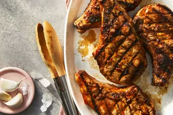

Delightful Honey Garlic Pork Chops

Ingredients
- ½ cup ketchup
- 2 ⅔ tablespoons honey
- 2 tablespoons low-sodium soy sauce
- 2 cloves garlic, crushed
- 6 (4 ounce) (1-inch thick) pork chops
Steps
- Preheat grill for medium heat and lightly oil the grate.
- Whisk ketchup, honey, soy sauce, and garlic together in a bowl to make a glaze.
- Sear the pork chops on both sides on the preheated grill. Lightly brush glaze onto each side of the chops as they cook; grill until no longer pink in the center, about 7 to 9 minutes per side. An instant-read thermometer inserted into the center should read 145 degrees F (63 degrees C).
Simple and delicious Grilled Cheese Sandwich

Ingredients
- 4 slices white bread
- 3 tablespoons butter, divided
- 2 slices Cheddar cheese
Steps
- Preheat a nonstick skillet over medium heat. Generously butter one side of a slice of bread. Place bread butter-side down in the hot skillet; add 1 slice of cheese. Butter a second slice of bread on one side and place butter-side up on top of cheese.
- Cook until lightly browned on one side; flip over and continue cooking until cheese is melted. Repeat with remaining 2 slices of bread, butter, and slice of cheese.
Take me back